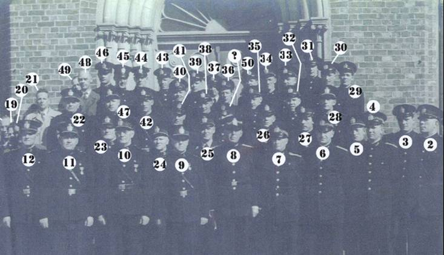
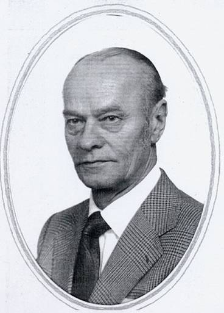
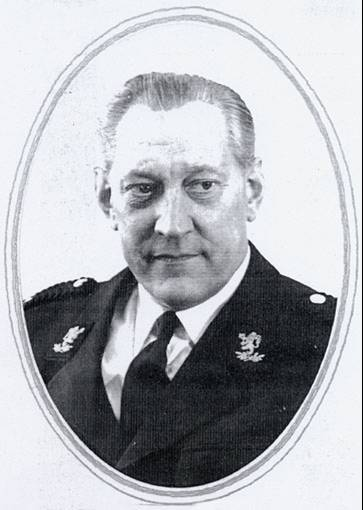
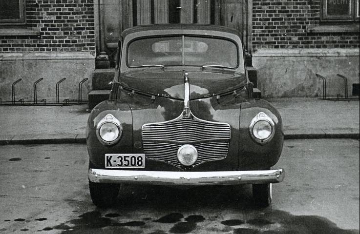
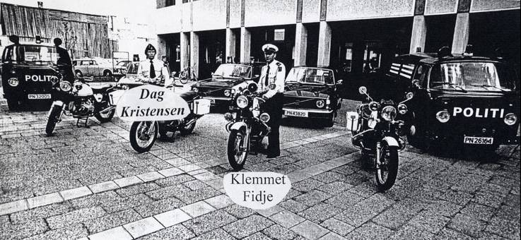
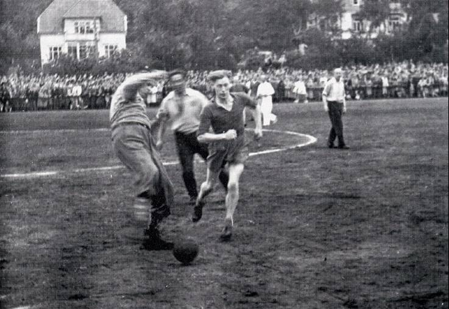
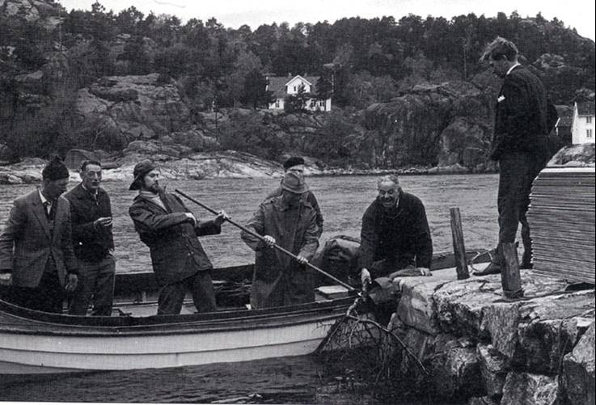
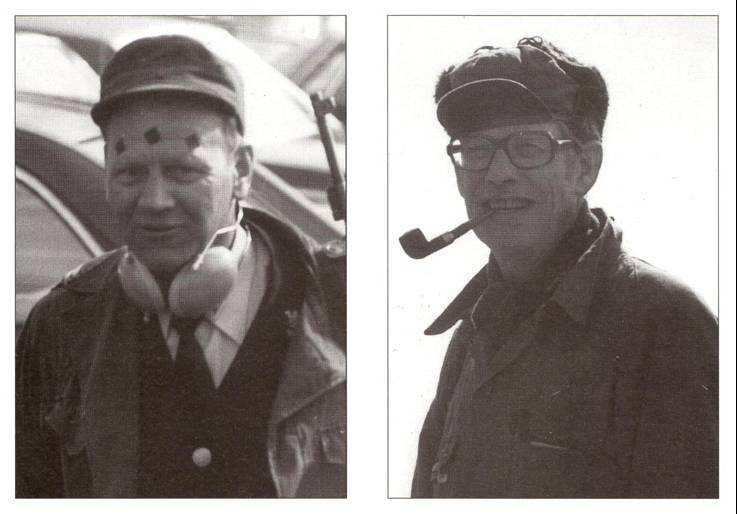

Politihistoriske bilder
Agder politidistrikts historie
En Politihistorisk produksjonsgruppe bestående av: Wilfred Dønnestad, Gudmund Torgny Skaar og Olav Bjørn Skaar, hentet i 2006 – 2007 fram og bearbeidet disse bildene fra Agder politidistrikts historie for publisering på Agderkultur.no.
Politikorps
Gammelt korpsbilde
Kristiansand Politikorps 1898
Kristiansand Politikorps 1935
Korpsbillede av Kristiansands politikorps, våren/forsommeren 1940 tatt i fengselsgården bak politikammeret. Seks av de syv som ble transportert til Oslo og fremstilt for Jonas Lie og Terboven, sees på bildet. Foran fra venstre: pfm. Per Kjær, pmf. Anders Eckoff, pm. Chr. W. Rynning-Tønnesen og pmf. Julius Haugen. Overkonstabel Hans Tomassen står som nr. 2 fra venstre. Politibetjent, senere overbetjent Jon Byklum står rett bak Anders Eckoff. Pfm. Finn Backer hadde enda ikke tiltrådt stillingen.
Korpsbilde i forbindelse med tildeling av en utmerkelse i 1954.
Nummer til foregående korpsbilde i forbindelse med tildeling av en utmerkelse i 1954..
Navn til nummer på foregående korpsbilde i forbindelse med tildeling av en utmerkelse i 1954.

Kristiansand Politikorps 1972
Øvre venstre del av montasjen av Kristiansand Politikorps 1972
Nedre venstre del av montasjen av Kristiansand Politikorps 1972
Øvre høyre del av montasjen av Kristiansand Politikorps 1972
Nedre høyre del av montasjen av Kristiansand Politikorps 1972
Når brannfolkene hadde patruljetjeneste, måtte de kunne legitimere seg. Derfor fikk man etter hvert polititegnet som de viste fram når så ble krevd.
Første side av ”Instrux for Brandkonstablerne i Kristiansand. (Vedtagen … 1896)
Politimestrene
Politimester Gulbrand Thesen, fra 1834 til 1840.
Politimester Hans Henrik Tybring Petersen, fra 1841 til 1880.

Politimester Christian Fredrik Hagemann, fra 1881 til 1889
Politimester Hans Fredrik Hansen, fra 1890 til 1916.
Politimester Sigvald Salvesson, fra 1916 til 1929.
Politimester Ludvig Fillip August Hermansen, fra 1929 til 1940.
Politimester Chr. W. Rynning-Tønnesen, fra 1940 til 1941 og fra 1945 til 1963
Politimester Roald Johansen, fra 1963 til 1970
Politimester Anders Eckhoff, 1970 til 1979
Politimester Carl M. Rynning-Tønnesen, 1979 til 1992.
Politimester Ansten Klev, fra 1992 til 2002
Politimester Bjørn Hareide, fra 2002. Første politimester for Agder Politidistrikt.
Politioverbetjentene
Knut Græ, politioverbetjent fra 1895 til 1923.
Rasmus Flaate, politioverbetjent fra 1923 til 1930.

Theodor Berge, politioverbetjent fra 1930 til 1934
Jørgen Hommeren, politioverbetjent fra 1935 til 1940.
Jon Byklum, ansatt våren 1940 som politioverbetjent. Innvilget avskjed i desember s. år. Arrestert januar 1941, løslatt etter 1 mnd. Tiltrer i tjenesten 7.5.45 som o.betj. og innehar stillingen til 1954.
Olav G. Man, politioverbetjent fra 1954 til 1955
Ingvald Greibesland, politioverbetjent fra 1955 til 1960
Harald Normann Faret, politioverbetjent fra 1960 til 1968
Gunnar Alek Nordgaard, politioverbetjent fra 1968 til 1973
Hans Malvin Syversen, politioverbetjent fra 1974 til 1978.
Tellef Ingebretsen, politioverbetjent fra 1978 til 1987
Kjell Torkelsen, politioverbetjent fra 1987 til 1990
Kåre Tellefsen, politioverbetjent fra 1990 til 1995
Historiske bilder
Fra høsten 1939. Krigen har startet ute i Europa, og Det Sivile Luftvern i Kristiansand presenteres utenfor Politikammeret. Den gamle "Svarte-Maia" med kalesje er synlig. Til høyre holder Thorwild Thomassen i sykkelstyret og Olav Bjørn Skaar er gutten med sydvest og regnfrakk..
Litt bakgrunnstoff til de 3 neste bildene
Etter tysk okkupasjon av Norge april 1940 og utover høsten, ble tjenesteforholdene for politiet mer og mer uholdbare; med pålegg/ordrer fra det nazifiserte politidepartement ved statsråd/politiminister Jonas Lie. Ordre av 16. desember 1940 lød:
1. Lojalitet fra politiets side er ikke nok.
2. Politiet skal aktivt gå inn for NS.
3. Politiet skal positivt samarbeide med Hirden i ordens opprettholdelse.
4. Politiet skal ikke kunne arrestere Hirden uten for forbrytelse
(altså ikke for forseelser – gateuorden for eksempel) og
5. Politiet skal innføre den ”Germanske” hilsen – stor og liten sådan.
Ordren utløste store protester med oppsigelser og søknader om avskjed, bl.a. ved Kr.sand pkm. Julaften 1940 føres der en heftig samtale mellom pm. Chr. Rynning-Tønnesen og Politiministeren. Dersom ikke oppsigelsene blir trukket tilbake går politiministeren til reichskomisær Terboven for samtykke/ordre om arrestasjon. Politimesteren orienterte s.d. et samlet korps om hva bl.a. trusselen inneholdt. S.d. kl 14.15 telegram til Politidepartementet: Ingen tilbakekallelser av oppsigelsene ved fristens utløp kl 14.00. 9.1.41 kom tjenestemenn fra Oslo pkm. og politiskolen for å overta stillingene. Disse hadde fått opplys at det var opptøyer i Kr.sand, og kom for å assistere korpset.
Oppsigelsene/avskjedene ble iverksatt 10.1.41. Samtidig gikk også ledelsen ved politikammeret – pm. Chr. Rynning-Tønnesen, politifullmektigene Per Kjær, Anders Eckhoff, Julius Haugen, major/fulm. Finn Backer og overbetj. Byklum. Alle 6 ble arrestert. Noen av dem ble sendt i tysk fangenskap; andre av kortere varighet her hjemme.
Overbetjent Jon Byklum fikk innvilget oppsigelse og fra trådte stillingen januar 1941. Tiltrådte igjen 7. mai 1945.
Overkonstabel Hans Thomassen sier opp sin stilling.

Politifullmektig Rynning-Tønnesen får avskjed fra Jonas Lie
Flere nazister ble arrestert i fredsdagene mai 1945
Jon Byklum, Wergeland Franck, Egil Enger, Olav Lund og Reidar Johnsen

Krigsadvokat, oberstløyntnant Chr. W. Rynning-Tønnesen på torget i Kristiansand våren 1945 ved tilbakekomsten fra England. Han står sammen med fungerende politimester i Kristiansand, Oskar Wergeland-Franck.
Chr. Rynning-Tønnessen i formannskapsmøte
Oppgraving av skutte rusiske krigsfanger på Bragdøya etter freden 1945. Uniformerte politimenn, t.h. Bjarne Vang, med ryggen til pm. Chr. Rynning-Tønnesen og t.v. Gunvald Århus
Politiet leder an i 17. mai toget i 1945
17. Mai
17. Mai
17. Mai 1945 – Ola E. Tveit i uniform til venstre i bildet
Hans Malvin Syvertsen på vei inn i Tresse sammen med barnetoget.

Politi i sommeruniform.
Politifullmektig Foss og Otto Gabrielsen på befaring
Klemmet Fidje, Otto Gabrielsen, Tellef Uldal, Thorvild Thomassen sammen med 2 engelske konstabler.
Innflytting i Tinghuset.
Klev og Fidje og repr. fra kommunen på vei inn på politivakta på Torget etter befaring på byen.

Mathilde Elise Heilmann – Ansatt som Norges første kvinnelige politibetjent ved Kristiansand politikammer i 1910 og fortsatte her fram til fylt aldersgrense i 1932.
Bekransning av Mathildes grav på Kristiansand kirkegård 1. juli 2000 – 90 års markering.
Bilde viser noen av Mathildes slektninger, samt nåværende uniformerte kolleger ”Kvinnenettverket i Agder politidistrikt” – oppkalt etter henne og heter ”Mathildes e.f.t.f”.
Viser til foregående bilde.
Overkonstabel Hans Tomassen viser STOPP-signal. Til høyre ser en den gamle fengselsmuren
Personell
Fra venstre: Frank Lysø, ukjent, Lars Nordal, Gunnar Borg, Alf Upsahl, Leif Møller, Harald Uldal og Georg Larsen.
”Gabba” blir intervjuet.
”Pmf. Tallak Haugen
Johnny Johnsen
Gunnar Vang og Øystein Berge i full sving med gammelt arkiv.
Hans Thommassen
Pfm. Egil Enger
Utklippsbilder av Egil Enger.
Utdeling av kongens fortjenestemedaljer i 1958. Fra venstre: Sveinung Berge, Karl Johan Bergh, Jonny Johnsen og Chr. Rynning-Tønnesen.
Politikjøretøy
Biloppstilling – fra venstre Sigurd Løvland, Tellef Uldal, Frank Lyse, Olav Bakke og Hans Malvin Syvertsen
Diverse politibiler i 1946.
Dodge 1939 mod.
IL Tempo Gigante, Klemmet Fidje og Ivo Caprino.
BMW 1970 mod og Klemmet Fidje.
K-5 1946 mod./p>
K-5 1946 modell Ford.
K-5 og Georg Larsen.
Hans Malvin Syvertsen, Tellef Uldal, Otta Gabrielsen, Frank Lyse og Ola Bakke foran svartemarja K-5.

K-7 – Opel Kaptein 1954 mod - Stabsbil.
K-10.
Rockefeller med sin tilkomne under bryllupet i 1959.
Landsskytterstevnet 1962 Kongebesøk Halvor Ugland på politimotorsykkelen
Landsskytterstevnet 1962 Vognmann Kristian Hægeland.

Ny K-10 Klemmet Fidje.
Opel Kaptein 1954 mod.
Opel Kaptein 1954 mod. ”Krimbil”.
Opel Kaptein stabsbil 1954 mod.
Politiets motorsyklister.
Klemmet Fidje, Inge Johansen, Sigurd Kleveland og Narve Somdal.

Olav Lund, Gunnar Borg, Tellef Uldal, Halvor Ugland, Thorvild Thommasen og Otto Gabrielsen.
Otto Gabrielsen på motorsykkel med sidevogn.
Otto Gabrielsen og Frank Lyse.
Politifullmektig Foss og Otto Gabrielsen på Hovden.
Politiet på vinterøvelse på Hovden
K 7 på veg langs Fånefjell ved Byglandsfjorden.
Politibåten K27585.
Politibåt K27
Politibåten K27
Politiidrett
"Heia Politiet!" er skrevet av Jan Øystein Berge. De fleste bildene på denne siden er hentet fra denne boka.
(Side 13) Fra idrettsstevne sommeren 1945 eller 1946. Bak fra venstre:Ukjent, J. K. Christensen, H. Faret. F.Lysø, K.Pedersen, ukjent, politimester Chr. Rynning.Tønnesen, H.Foss, ukjent og ukjent. Foran fra venstre: K. J. Bergh, D. Sjursø, O. Oland?, R. Jacobsen og ukjent
(Side 14A) Fra 1945 – 1946. Frank Lysø, Harald Faret, ukjent, Chr. Rynning Tønnesen og Karen Pedersen
(Side 14B) Fra en fotballkamp i 1945 - 1946
(Side 15) Fra 1945 – 1946 Harald Faret sparker ballen foran Karl Johan Berg.
Wilhelm Holst-Larsen, Otto Gabrielsen, Leif Møller, Frank Lysø og Einar Haugedal
Otto Gabrielsen starter J. Birkeland fra jernbanen og Narve Somdal på Idda i 1961
Chr. Rynning-Tønnessen i samtale med journalister.
(Side 23B) Reidar Jacobsen og Alf Upsahl tilbereder mat under skytestevne mot Hjørring i 1967.
(Side 24) På fisketur på politiets hytte i Romsviga. Alf Pettersen sjekker fangsten til noen danske kollegaer. Til venstre i båten står Alf Upsahl og til høyre står Reidar Jacobsen.
(Side 24B) Fra skjærgårdstur med Bjørn Furuborgs båt Sajama i 1967. Fra venstre ser vi Thoralf Berge, Thor C. Pedersen Bjørn Furuborg og Einar Kjetså.
(Side 33) Svein Erik Olsen, Egil Leesland, Anne Marie Løvsland, Jan Kruse og Carl M.Rynning-Tønnesen
(Side 44) Olaf Tønnesen biter tennene sammen og klarer løftet.
(Side 45) Bård Austad og Olaf T. Tønnesen på hver sin side av vinneren i vektløfting under PM i 1986.
(Side 50A) Landslaget i Nordisk politimesterskap i Tammerfors i Finland i 1983. Jan Kruse, Reidar Heivoll og John Hansen i bakre rekke.
(Side 50B) Per Andor Vangen, Paul M.Lunde, Kristen Ribe og Jan Kruse under PM i Drammen i 1983
(Side 58) Politilandslaget i EM i orientering i Danmark 1994. Bak ser vi Reidar Heivoll, Villy Slavesen og Jan Kruse. Foran i midten sitter Inger Aurebekk og til høyre Kristen Ribe.
(Side 63) Bedriftsmestre i fottball 1957. Bak fra venstre Frank Timenes, Olav S. Hagen, Kjell Torkilsen, Halvor Ugland, Harry Ridi og Sverre Falch. Foran: Alf Pettersen, Otto Gavrielsen, Einar Hugedal, Frank Lysø, Wilhelm Holst-Lasen og Leif Møller.
Bedriftfotballaget 1966. Torgny Skaar, Georg Karlsen, Frank Lysø, Einar Haugedal,Tor C. Pedersen Olaf Omholt, Bjarne Eikeland, Bjørn Furuborg, Sverre Falk, Olav Hagen og Knut Solås
(Side 73) Her er innsatsen på topp i en fotballkamp mellom Politiet og Lærerne. Tor Øivind Aagesen sender av gårde et kanonskudd, som Oftedal, Waage og varaordfører Harald Sødal prøver å avverge. Bildet er tett i slutten av 70 tallet.
(Side 74) CUPMESTRE 1980. Foran fra venstre: P. A. Pedersen, V. Enger, T. Byklum, V. Andersen, G. Homme og E. Leesland. Bak: S. E. Olsen, P. Langeland, A. Heiset, T. Ø. Aagesen, R. Vang, A. Eriksen og J. G. Bjørtvedt.
Håndballaget etter en seier.

(Side 126A) Våre landslagsdeltagere under Nordisk Mesterskap i håndball i København 1974. Fra venstre: Odd Alf Fredriksen, Svein Erik Bjørkås og Thor Carsten Pedersen.
(Side 84) De første uoffesielle politimestre i damefotball 1994. Bak fra venstre: C. Østby, A. L. Laache, I. T. Mæbre og M. Stausland. Foran: I. Aurebekk, K. Mollestad, M. Wienenga og B. Svensen.
(Side 91) Sverre Falch vinner lengde på 5,59 meter og kule med 10,51 meter.
(Side 98) Laget til Holmenkollstafetten i 1979 like før avreise. Bak fra venstre: R. Heivoll, G. E. Karlsen, J. Kruse, P. Lunde, O. Nordmo, R. Strømsvåg, J. T. Bue og T. Frydendal. Foran: O. G. Røyland, S. O. Halvorsen, K. Ribe, L. O. Nesset og P. A. Vangen.
(Side 155) IDRETTSDAGEN 1995: Alle deltagerne samlet foran garderobene på Stadion.

(Side 163A) Speaker Bjarne Berge hadde alt under full kontroll.
(Side 163B) Harald Tønnessen vinner sitt heat på 60 meter foran Arne Eriksen, Øystein Berge, Wilfred Dønnestad og Per Moseid.
(Side 23A) Fra skytingen mot Hjørring i 1967. Vi kjenner igjen Olav Nordgaard med briller og hatt og Einar Kjetså med stripete genser.
(Side 179A) Fra venstre: Ukjent (med lue), Olaf Omholt, Arne Jessen, Jan G. Bjørtvedt og Sverre Falch.
(Side 180A) Klemmet Fidje fremdeles oppegående etter 3 blinker; og Halvor Ugland tar seg et av de sjeldne drag av pipen.
(Side 180B) Nåværende VG-journalist Jon Selås, Birger J. Nilsen og Bernhard Refsland.